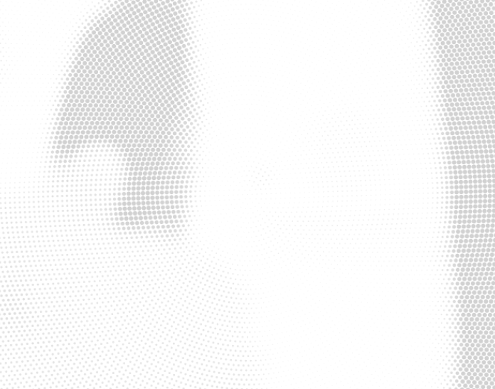
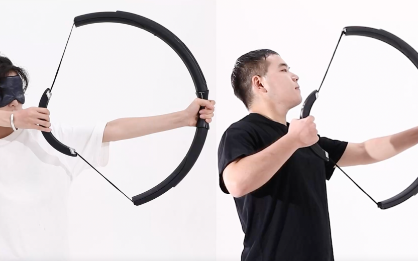
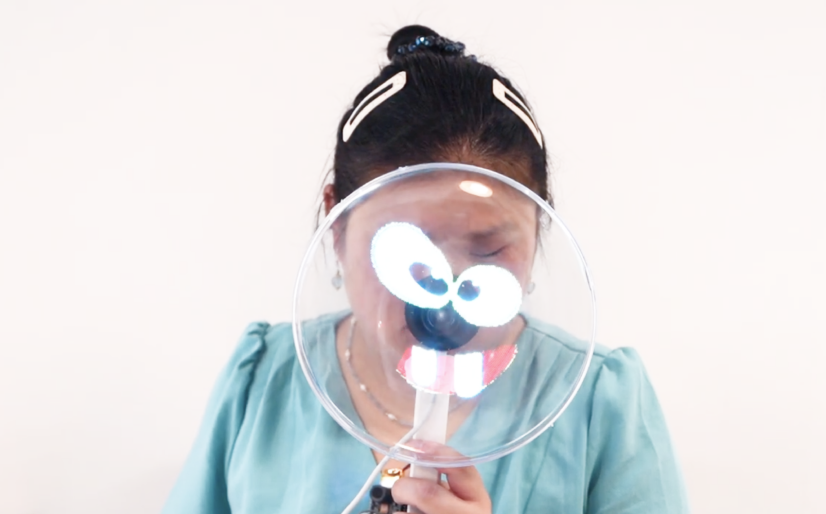
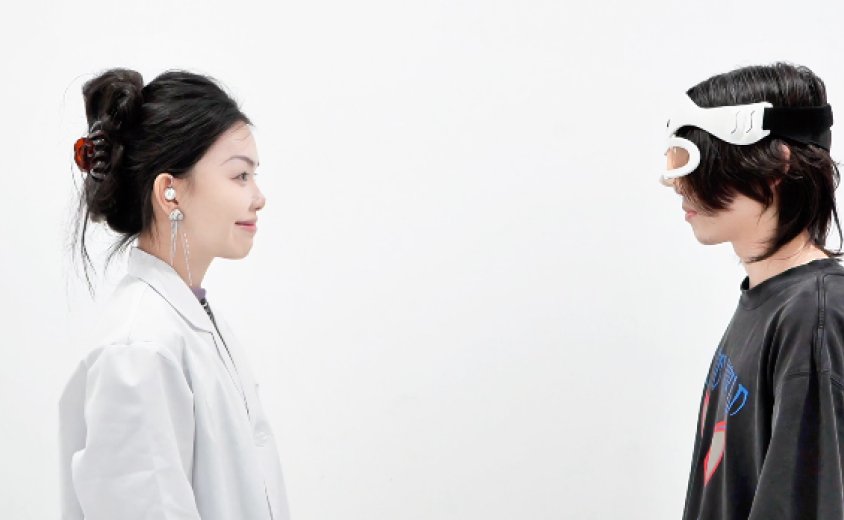
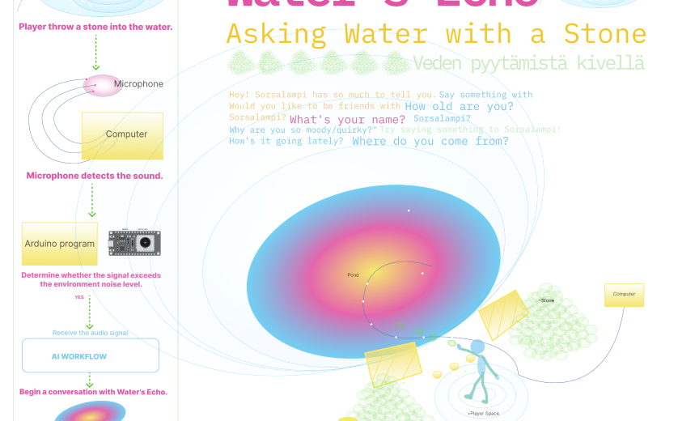
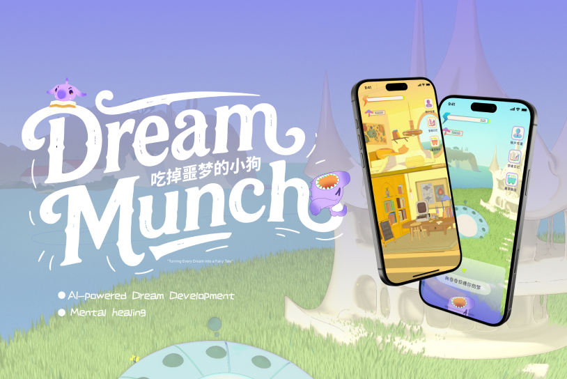

I graduated with a master's degree from the China Academy of Art, In the past, my research primarily focused on using technology to build interaction, play, and communication between blind and sighted people. Now I hope to shift my previous interactive experience toward establishing connections between humans and nature, in the more-than-human domain.
My past accessibility HCI publications have mainly appeared in venues such as ASSETS, CHI PLAY, CHI, and CSCW, while my current more-than-human HCI work is focused on conferences like TEI.
My research strengths lie in the innovative design thinking that integrates art and technology, achieving humanistic creative solutions through intelligent systems. I hope that design can use technology to build more bridges between people and nature.
LUO SHAN
luoshan3398@qq.com

luoshan3398@qq.com
Design Vlogger : 山岭静悄悄
NEWS
Jan 15 2026
Our accessibility project "Emojifan" has been accepted as a CHI 26 Full Paper. This project has been a
long-term collaboration with Professor Rina from Dalhousie University in Canada. Really enjoyed this
journey—see you in Barcelona!
Jan 5 2026
I will be working as a research assistant at HKUST for a period of time, mainly focusing on game-related
research.
Dec 15 2025
Our game "Eat Dream AI" has been accepted as an Asia Siggraph 25 poster and was successfully showcased
in Hong Kong!
Jan 21 2026
Our "Bird Robot" has been accepted as an HRI 26 poster. Made some new friends through this
collaboration.
Nov 17 2025
Our short papers "Hearing the Smile" and "Emojifan" have been accepted and published at Chinese CHI25.
Met many senior Chinese researchers in Singapore!
Oct 1 2025
I conducted a 6+ month hybrid collaboration with the Gameful Future Lab at Tampere University in
Finland, and our paper was successfully accepted as a TEI 26 Work-in-Progress.
June 12 2025
Over the past 6 months, our designed AI therapeutic game "Eat Dream AI" was officially launched on the
App Store, reaching 500+ users. We have also pitched at various conferences and platforms including
Sequoia Capital, Baidu Ventures, and university events.
May 14 2025
I attended the CHI 25 workshop and met many peers and professors at the conference.
REPORT
China Youth Daily(中国青年报）
”This
Post-95s Girl Uses AI to Help Blind and Able-bodied
People...”
June 20 2023
Today’s Headlines,（今日头条）
”Post-95s Girl Develops ’Sunny Blind Co-Play’
Shooting...”
June 28 2023
Zhejiang News（浙江新闻）
”Archery
with Ears as Eyes.”
May 15 2021
Xiaohongshu Social Media, Hot Search List（小红书热搜榜）
“Hot
Search with 500w Traffic...”
June 11 2023
HFA Community
"In the senior Guomei, one
can see the highest state of
'being competitive without realizing it."
April 26 2024
Human Pixels（人间像素）”Hearing, This Colorful World.”
June 29 2023
EXHIBITION/AWARD
Dec 27 2023
Hangzhou
ShangHai West Bund Art And Design Expo, A Live-action CS Sound
Shooting Game App.
June 01 2023
Hangzhou
Zhejiang Exhibition Hall, A Live-action CS Sound Shooting Game
App.
July 15 2023
Guangzhou
Hong Kong University of Science and Technology, A Live-action
CS Sound Shooting Game.
Dec 15 2022
Shenzhen
4th China Design Exhibition and Public Art Special Exhibition,
Hearing The Bullseye.
March 15 2022
Dutch
Dutch Design Week, Hearing The Bullseye.
June 15 2021
Shaoxing
Beyond the Realm Exhibition: Design Intellegence Center
Honorable Mentions, Hearing The Bullseye.
Dec 25 2022
Gold Award, 13th International User Experience Competition
(UXDA, UXPA).
Dec 18 2022
Finalist, World Summit on the Information Society (WSIS) Award
Nomination.
May 15 2022
Finalist, OPPO Global ”Smile Proposal” Finalist Award.
Dec 22 2021
Honorable Mention, DIA China Design Intelligent Manufacturing
Award.
June 15 2018
Third Prize, Hunan Province Internet Plus College Students
Innovation and Entrepreneurs.
REPRESENTATIVE RESEARCH

Hearing the Bullseye: An Auditory-Cued Archery Exergame for
the Visually Impaired and Their Sighted Family and Friends.
Design Intelligence Project, Alibaba Cloud Design × China Academy of Art. 2021
Abstract : How can blind and sighted individuals play together? The natural disparity in visual abilities often poses challenges for fair competition in social play. This can diminish the confidence of visually impaired (VI) individuals and reduce engagement for sighted players. While previous literature has incorporated fairness design strategies for the VI, we additionally aim to address the potential problem of boredom for sighted players by providing enhanced visual feedback without compromising fairness as a novel design strategy...

EmojiFan: Designing a Social Interface Supporting Facial Expression Interaction for Blind and Low Vision People in Party Settings
Dalhousie. 2025
Abstract : Facial expression interactions play a crucial role in fostering social bonds and expressing emotions. However, in the dynamic, fast-paced, and noisy environments of parties, various factors hinder blind and low-vision (BLV) individuals from engaging fully in facial expression interactions. While previous research has explored how BLV users can convey emotions through non-verbal visual cues, it has largely overlooked the challenges they face in engaging with facial expressions after perceiving these cues...

Hearing the Smile: Designing A Social System Sonifying Interpersonal Warmth for Blind and Low Vision People in Ice-Breaking Connection Process
Hong Kong University of Science and Technology. 2024
Abstract : Interpersonal warmth is a key signal that helps strangers build relationships. However, BLV individuals lack access to such cues, limiting their ability to perceive warmth and establish trust. Prior work has primarily supported BLV users through auditory or textual cues during conversations, but overlooked the ice-breaking connection process—how BLV individuals can proactively sense warmth before talking. We conducted formative study to explore the interaction modality...

Asking Water with Stones: Designing Playful Dialogues with Water System to Build Connection between Human and Water Ecosystems
Tampere University 25-26
Abstract : The more-than-human field has contributed numerous opportunities for interacting with nature, animals, plants, and microorganisms. However, few studies have examined water ecosystems. Current water-related work primarily treats water as a medium for human-centered activities, rarely positioning water as an interactive subject. Building upon prior research, we explore how to better integrate water more playfully into digital-physical interactions as an interactive subject...

TunTun Diary: Exploring AI-Generated Storytelling and Virtual Companionship for Nightmare Relief
Abstract : Nightmares disrupt sleep and heighten daytime anxiety, yet therapeutic support is often hard to access due to limited clinician availability, cost, and clinical framing. We propose TunTun Diary, a mobile game in which an alien puppy named TunTun "eats" players' nightmares and returns gentle, comic-style retellings. The system uses generative AI to reinterpret users' nightmare descriptions into positive narratives. Through simple text-based dream input and playful pet interactions, players form an emotional bond with TunTun as a safe and supportive companion for coping with negative dreams...
More Research Project···